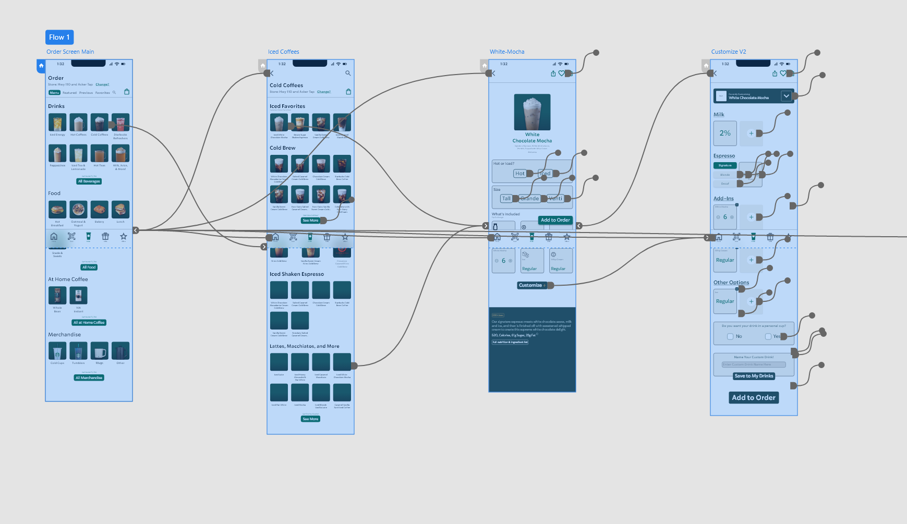
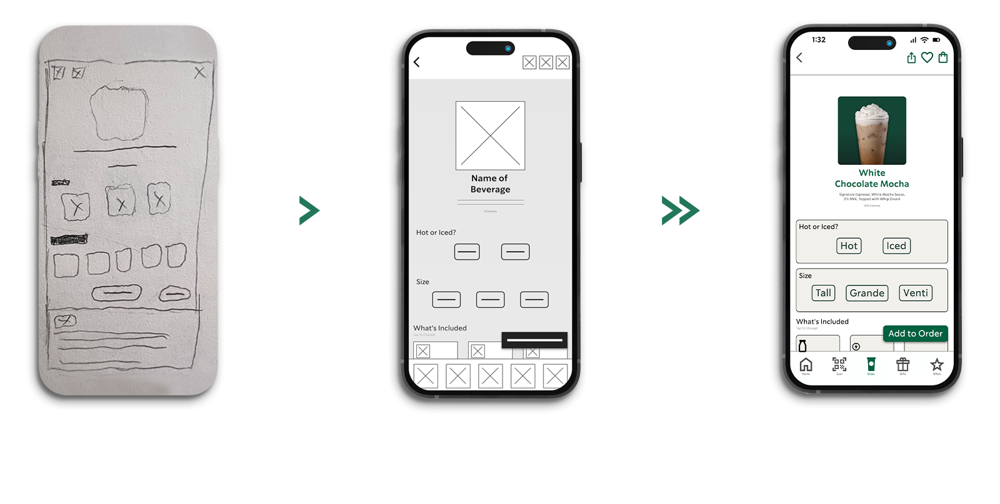
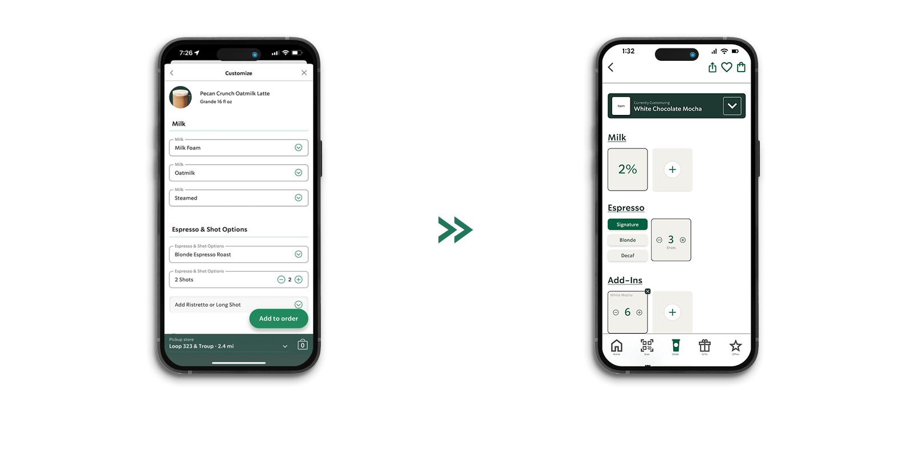

UX/UI Redesign — 2024
For five years I worked as a partner — and eventually shift supervisor — at Starbucks. I know the operation from the inside. And I knew the app wasn't keeping up with the experience we were trying to create in store. The customization flow was the biggest problem. Popular drinks buried at the bottom. Sauces and syrups split into separate sections despite doing the same job. A cart button eating up screen real estate. None of it felt like Starbucks — warm, personal, yours.

I used the Starbucks experience itself as the design benchmark — if a part of the app wasn't delivering that warm, welcoming feeling, it had to change. Three key pain points emerged: visibility of popular drinks, navigation inefficiencies, and an overly complex customization process.

Side-by-side sketches of the existing customization page alongside the proposed redesign. Each decision was measured against the problem statement — only moving forward when a design genuinely added value.

The constraint was working entirely within Starbucks' established brand system — no new colors, no new type. Designing within a narrow range of cream tones, with no bold color to lean on, pushed me to find depth through spacing, weight, and structure alone.
Click either screen to view full size.
One concept that emerged during the project: Community Creations — allowing customers to share their unique drink customizations with others. Inspired by the weekly "Barista Pick" we run in store, this feature would turn the app into a space for discovery, not just ordering.